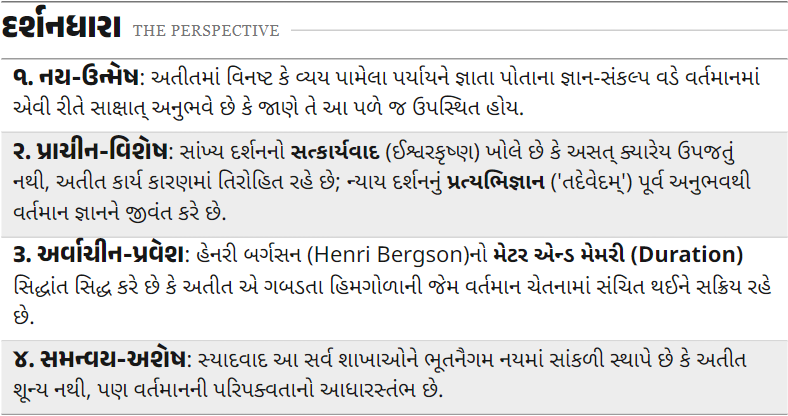
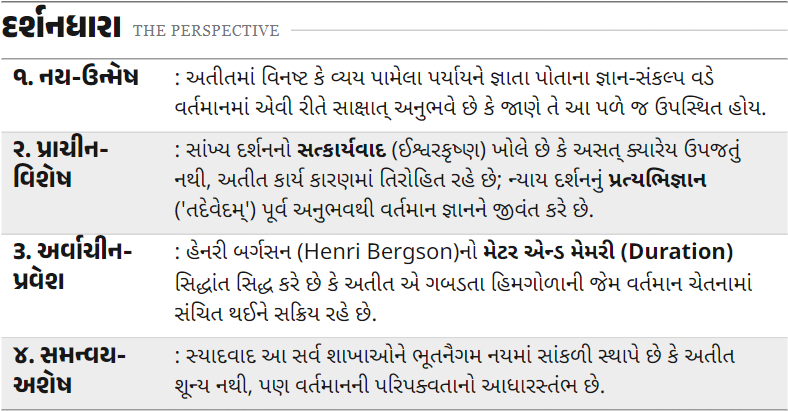
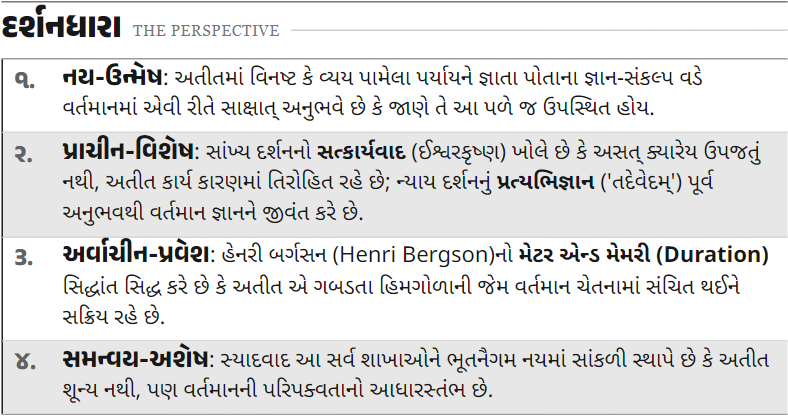

A · આડા પટ્ટા
બે પાનાં ખોલો ↗શીર્ષક અને સમજણ એક જ પટ્ટામાં. લાંબું લખાણ સરળતાથી વહે છે.

છેય ધારાઓ: Anek Gujarati 17 pt · ઉપશીર્ષકો: 13 pt · body: 11 pt. દરેક વિકલ્પમાં લખાણ અને ક્રમ સમાન છે.
શીર્ષક અને સમજણ એક જ પટ્ટામાં. લાંબું લખાણ સરળતાથી વહે છે.

ડાબે અલગ શીર્ષક અને જમણે સમજણ. વધુ સ્પષ્ટ table જેવી ગોઠવણી.

નંબરની અલગ rail અને કાળી ધાર. ચાર મુદ્દાનો ક્રમ વધુ સ્પષ્ટ દેખાય છે.

બીજી અને ચોથી rowમાં આછો gray પટ્ટો છે. વપરાશકર્તાએ C—નંબરવાળા પટ્ટા પસંદ કર્યો છે; મુખ્ય HTMLમાં C લાગુ છે. જૂનું PDF બદલ્યું નથી.